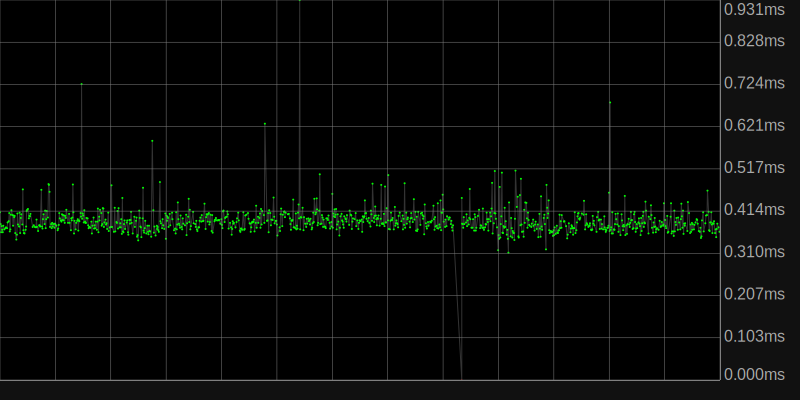
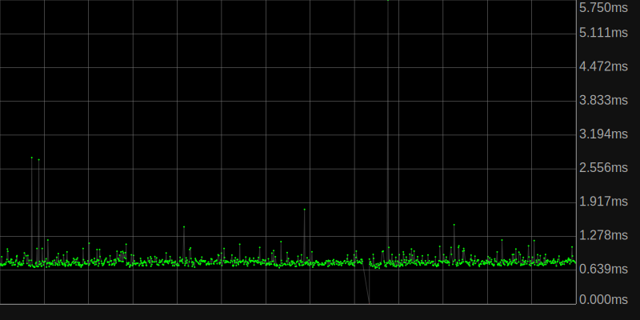

lua_pingd
Global stats
Global statistics currently unaviable
Statistics for Router (192.168.1.1)
Statistics unaviable for this host
Statistics for Modem (192.168.100.1)
Statistics unaviable for this host
Statistics for Localhost (127.0.0.1)
Statistics unaviable for this host

Statistics for Google DNS (8.8.8.8)
Statistics unaviable for this host